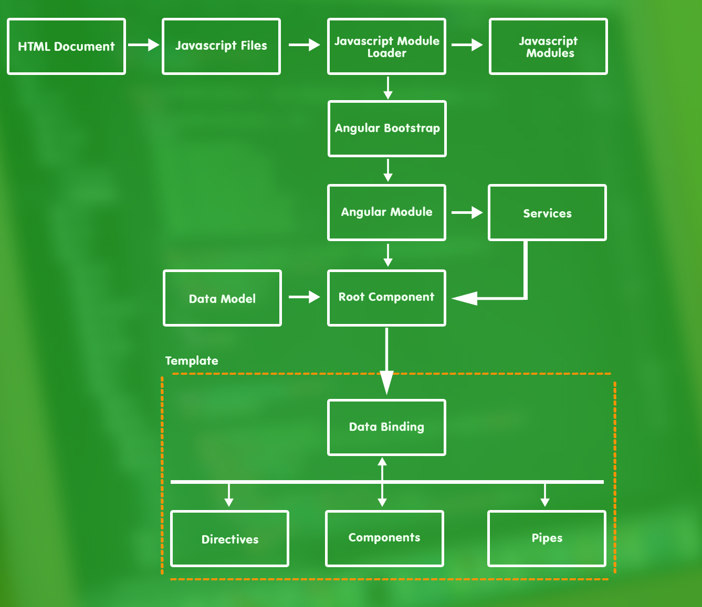

These are the building blocks in a basic Angular application, shown in the image.
| Name | Discription |
|---|---|
| HTML Document | This is the HTML document that is requested by the browser and that contains all the content required to load and start the Angular application. |
| JavaScript Files | These are regular JavaScript files that are added to the HTML document using script elements. The JavaScript files are used to add missing features required by Angular that are not supported by the browser and for the JavaScript module loader. |
| Module Loader | This is a JavaScript component that is responsible for loading the Angular modules and the other application building blocks. See the "Configuring the JavaScript Module Loader" and "Applying the JavaScript Module Loader" sections for more details. |
| JavaScript Modules | These are JavaScript files that are packaged into a specific format that allows dependencies between packages to be managed by the module loader to ensure that the JavaScript code in the application is loaded correctly and executed in the right order. The Angular framework is delivered as a set of JavaScript modules, as are some of the required support libraries. |
| Angular Bootstrap | This is a TypeScript file that configures Angular and specifies the Angular module, which is loaded to start the application. See the "Bootstrapping the Application" section for details. |
| Angular Module | All Angular projects have a root module that describes the application and can contain additional modules to group related features together and make the project more manageable. See the "Creating the Angular Module" section for the basic module used in the chapter and Chapter 21 for full details of how modules work. |
| Data Model | The model provides the data in the application and the logic required to access it. See the "Creating the Model" section for details. |
| Root Component | The root component is the entry point into the application and is responsible for generating the dynamic content that is displayed to the user |
| Template | The template is the HTML content that is displayed by the root component. See the "Creating the Template and Root Component" section for details. |
| Data Bindings | Data bindings are annotations in the template that tell Angular how to insert dynamic content, such as data values, and how to respond to user interactions. |
| Directives | Directives are classes that transform HTML elements to generate dynamic content. |
| Components | Components add content to the application to provide application features. |
| Pipes | Pipes are classes that are used to format data values for display to the user. |